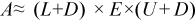
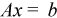
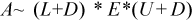

Intel® oneAPI Math Kernel Library Developer Reference - Fortran
Computes an action of a preconditioner which corresponds to the approximate matrix decomposition  for the system  (see description below).
status = mkl_sparse_s_lu_smoother (op, A, indx, descr, diag, approx_diag_inverse, x, b)
status = mkl_sparse_d_lu_smoother (op, A, indx, descr, diag, approx_diag_inverse, x, b)
status = mkl_sparse_c_lu_smoother (op, A, indx, descr, diag, approx_diag_inverse, x, b)
status = mkl_sparse_z_lu_smoother (op, A, indx, descr, diag, approx_diag_inverse, x, b)
This routine computes an update for an iterative solution x of the system Ax=b by means of applying one iteration of an approximate preconditioner which is based on the following approximation:
, where E is an approximate inverse of the diagonal (using exact inverse will result in Gauss-Seidel preconditioner), L and U are lower/upper triangular parts of A, D is the diagonal (block diagonal in case of BSR format) of A.
The mkl_sparse_?_lu_smoother routine performs these operations:
r = b - A*x /* 1. Computes the residual */ (L + D)*E*(U + D)*dx = r /* 2. Finds the update dx by solving the system */ y = x + dx /* 3. Performs an update */
This routine is supported only for sparse matrices in BSR format, non-transpose operation and real data types.
Both diagonal values and approximate diagonal inverse arrays should be passed explicitly.
C_INT .
Specifies the operation performed on matrix A.
SPARSE_OPERATION_NON_TRANSPOSE, op(A) := A |
NoteTranspose and conjugate transpose (SPARSE_OPERATION_TRANSPOSE and SPARSE_OPERATION_CONJUGATE_TRANSPOSE) are not supported. Non-transpose, op(A)= A. |
SPARSE_MATRIX_T.
Handle which contains the sparse matrix A.
MATRIX_DESCR.
Structure specifying sparse matrix properties.
sparse_matrix_type_ttype - Specifies the type of a sparse matrix:
SPARSE_MATRIX_TYPE_GENERAL |
The matrix is processed as is. |
SPARSE_MATRIX_TYPE_SYMMETRIC |
The matrix is symmetric (only the requested triangle is processed). |
SPARSE_MATRIX_TYPE_HERMITIAN |
The matrix is Hermitian (only the requested triangle is processed). |
SPARSE_MATRIX_TYPE_TRIANGULAR |
The matrix is triangular (only the requested triangle is processed). |
SPARSE_MATRIX_TYPE_DIAGONAL |
The matrix is diagonal (only diagonal elements are processed). |
SPARSE_MATRIX_TYPE_BLOCK_TRIANGULAR |
The matrix is block-triangular (only the requested triangle is processed). Applies to BSR format only. |
SPARSE_MATRIX_TYPE_BLOCK_DIAGONAL |
The matrix is block-diagonal (only diagonal blocks are processed). Applies to BSR format only. |
sparse_fill_mode_tmode - Specifies the triangular matrix part for symmetric, Hermitian, triangular, and block-triangular matrices:
SPARSE_FILL_MODE_LOWER |
The lower triangular matrix part is processed. |
SPARSE_FILL_MODE_UPPER |
The upper triangular matrix part is processed. |
sparse_diag_type_tdiag - Specifies the diagonal type for non-general matrices:
SPARSE_DIAG_NON_UNIT |
Diagonal elements might not be equal to one. |
SPARSE_DIAG_UNIT |
Diagonal elements are equal to one. |
Only SPARSE_MATRIX_TYPE_GENERAL is supported.
C_FLOAT for mkl_sparse_s_lu_smoother
C_DOUBLE for mkl_sparse_d_lu_smoother
C_FLOAT_COMPLEX for mkl_sparse_c_lu_smoother
C_DOUBLE_COMPLEX for mkl_sparse_z_lu_smoother
Array of size at least m, where m is the number of rows (or nrows * block_size * block_size in case of BSR format) of matrix A.
The array diag must contain the diagonal values of matrix A.
C_FLOAT for mkl_sparse_s_lu_smoother
C_DOUBLE for mkl_sparse_d_lu_smoother
C_FLOAT_COMPLEX for mkl_sparse_c_lu_smoother
C_DOUBLE_COMPLEX for mkl_sparse_z_lu_smoother
Array of size at least m, where m is the number of rows (or the number of rows * block_size * block_size in case of BSR format) of matrix A.
The array approx_diag_inverse will be used as E, approximate inverse of the diagonal of the matrix A.
C_FLOAT for mkl_sparse_s_lu_smoother
C_DOUBLE for mkl_sparse_d_lu_smoother
C_FLOAT_COMPLEX for mkl_sparse_c_lu_smoother
C_DOUBLE_COMPLEX for mkl_sparse_z_lu_smoother
Array of size at least k, where k is the number of columns (or columns * block_size in case of BSR format) of matrix A.
On entry, the array x must contain the input vector.
C_FLOAT for mkl_sparse_s_lu_smoother
C_DOUBLE for mkl_sparse_d_lu_smoother
C_FLOAT_COMPLEX for mkl_sparse_c_lu_smoother
C_DOUBLE_COMPLEX for mkl_sparse_z_lu_smoother
Array of size at least m, where m is the number of rows ( or rows * block_size in case of BSR format ) of matrix A. The array b must contain the values of the right-hand side of the system.
C_FLOAT for mkl_sparse_s_lu_smoother
C_DOUBLE for mkl_sparse_d_lu_smoother
C_FLOAT_COMPLEX for mkl_sparse_c_lu_smoother
C_DOUBLE_COMPLEX for mkl_sparse_z_lu_smoother
Overwritten by the computed vector y.
INTEGER
Value indicating whether the operation was successful or not, and why.
SPARSE_STATUS_SUCCESS |
The operation was successful. |
SPARSE_STATUS_NOT_INITIALIZED |
The routine encountered an empty handle or matrix array. |
SPARSE_STATUS_ALLOC_FAILED |
Internal memory allocation failed. |
SPARSE_STATUS_INVALID_VALUE |
The input parameters contain an invalid value. |
SPARSE_STATUS_EXECUTION_FAILED |
Execution failed. |
SPARSE_STATUS_INTERNAL_ERROR |
An error in algorithm implementation occurred. |
SPARSE_STATUS_NOT_SUPPORTED |
The requested operation is not supported. |